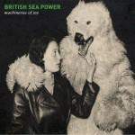
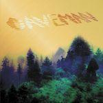
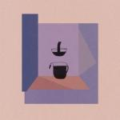
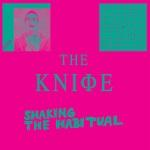

Music Reviews
-

Milk Music Cruise Your Illusion
Washington four-piece Milk Music blend blissful isolation with the warmest of lo-fi, fuzzed out melodics in the way of their debut full-length LP. Drawing influences from the likes of Dinosaur Jr., Husker Du and Sonic Youth, and oozing a past not quite forgotten, an unmastered precession of indie post-punk rock will leave you wondering where the last hour went.
Carl Purvis basks in the fuzz... -

The Flaming Lips The Terror
Over the last two years, Wayne Coyne and company have flooded the market with oddball musical trinkets. However, does the group's latest output stand up on its own gimmick-free?
Andrew Ciraulo took a break from eating his gummy fetus to bring you this review... -

British Sea Power Machineries of Joy
10 years after its sensational debut The Decline of British Sea Power, the Brighton-based band is band with its fifth studio album.
David Coleman reviews... -
White Fence Cyclops Reap
For Cyclops Reap, White Fence loosely and predictably considers the psychedelic sounds of the 60s (because no one else in music is doing that right now).
Sean Caldwell reviews... -

Caveman Caveman
Ladies and gentlemen, the greatest yawn of 2013.
Peter Quintons eye's are getting heavy just writing this Caveman review... -

Kurt Vile Wakin' On A Pretty Daze
The Philadelphia songwriter lets loose in this sprawling, country rock-influenced new effort, one that openly affirms a personal accountability for self without slipping into heavy-handedness.
Juan Edgardo Rodríguez never touches the stuff... -

Devendra Banhart Mala
Devendra Banhart continues to expand his sound on this, his eighth studio offering, but does he manage to keep the charm that made his past music oh so special?
Richard Petty prepares to get on the dancefloor... hold tight. -

The Knife Shaking The Habitual
Heard the new one by Swedish brother-and-sister electronica duo, The Knife? Weird, isn't it.
Liberals have been giving Mark Davison a nerve itch... -
Cold War Kids Dear Miss Lonelyhearts
Touted as something of a concept album, Cold War Kids' fourth full-length takes us on a familiar trip to heartbreak, but without any semblance of satisfying resolution.
Gabbie Nirenburg reviews... -

Tyler, The Creator Wolf
Back again, who is he? Just your favourite OF member. It's a new release with beats you never heard.
James McKenna reviews...